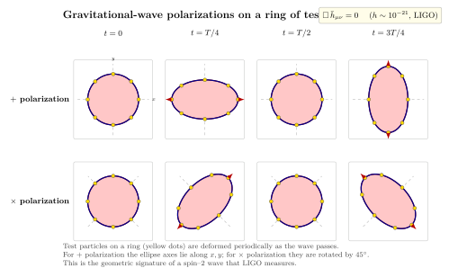

引力波 — 时空真的会涟漪吗?
到目前为止, Einstein 场方程对我们而言更像是一组关于"形状"的代数: 给一个稳态的物质分布 (一颗星, 一个黑洞), 解出一块固定下来的弯曲度规. 但波动是物理的常驻嘉宾 — Maxwell 方程一旦写出, 就立刻预言了电磁波; Newton 方程一旦写出, 就预言了机械波. Einstein 1916 年刚刚把场方程写出来, 第一件事就是问: 这套方程的真空解里, 有没有以光速传播的扰动模式? 他自己很快得到了答案: 有, 而且只有两种偏振. 这就是引力波 (gravitational waves).
但答案带着复杂的伴生疑问. 与电磁波不同, 引力波是时空几何本身在传, 它能否被读出来取决于你如何选坐标 — 100 年里, 物理学家反复怀疑这些波到底是真的物理实体还是规范的副产品. 我们这一节走完整的过程: 先把方程线性化, 把规范自由度刨掉, 找到真正的 2 个偏振模式; 看它怎么形变测试粒子环; 写下 Einstein 自己的电四极辐射公式; 最后代入 GW150914 那两颗黑洞, 看 LIGO 在 2015 年 9 月那个早晨听到的是什么.
一、把度规线性化: 弱场 + Lorenz 规范
从一个具体的设想出发: 远离一切引力源的真空里, 时空是 Minkowski 的; 然后让一颗远处的星稍稍晃动一下, 它的引力场扰动如果以光速向外传, 就该有形如 "Minkowski + 小量" 的结构. 写
$$ g_{\mu\nu}(x) \;=\; \eta_{\mu\nu} + h_{\mu\nu}(x), \qquad |h_{\mu\nu}|\ll 1, $$
把它代到 Einstein 张量 $G_{\mu\nu}=R_{\mu\nu}-\tfrac12 g_{\mu\nu} R$ 里, 只保留 $h$ 的一阶项. 上一节我们已经在 Newton 极限里干过这件事; 这次我们不再要求 $h_{\mu\nu}$ 是静态的, 而是允许它对时空都依赖. 一阶 Ricci 张量是
$$ R_{\mu\nu}^{(1)} \;=\; \tfrac12\big(\partial_\mu\partial_\alpha h^{\alpha}{}_{\nu} + \partial_\nu\partial_\alpha h^{\alpha}{}_{\mu} - \Box h_{\mu\nu} - \partial_\mu\partial_\nu h\big), $$
其中 $h\equiv h^\mu{}_\mu = \eta^{\mu\nu}h_{\mu\nu}$ 是迹, $\Box=\eta^{\mu\nu}\partial_\mu\partial_\nu$ 是 d'Alembert 算子. 这个表达式不那么干净 — 但它含有一个我们此刻该利用的对称性: 一个无穷小的坐标变换 $x^\mu\to x^\mu+\xi^\mu(x)$ 让 $h_{\mu\nu}\to h_{\mu\nu} - \partial_\mu\xi_\nu - \partial_\nu\xi_\mu$, 不改变物理. 这就是规范自由度 — 跟电磁里的 $A_\mu\to A_\mu+\partial_\mu\Lambda$ 是一回事.
定义"轨迹反转"组合 $\bar h_{\mu\nu} = h_{\mu\nu}-\tfrac12\eta_{\mu\nu}h$ (它的迹与 $h$ 反号), 选 Lorenz 规范 $\partial^\mu \bar h_{\mu\nu}=0$, 上面那一堆交叉项消掉, 剩下一个干净到不可思议的方程. 真空 ($T_{\mu\nu}=0$) 中
$$ \boxed{\;\Box\,\bar h_{\mu\nu} \;=\; 0.\;} \tag{1} $$
这就是真空引力波方程. 它告诉我们: 度规扰动 $\bar h_{\mu\nu}$ 满足跟无质量自由场一样的波动方程, 以光速传播. 有源时, 等号右边换成 $-16\pi G T_{\mu\nu}/c^4$, 与 Maxwell 的 $\Box A_\mu = \mu_0 J_\mu$ 形式一致 — 这是 GR 与电磁理论第一次显出深刻的形式相同.
剩下一个问题: $h_{\mu\nu}$ 是 $4\times 4$ 对称张量, 有 10 个独立分量. Lorenz 规范固定了 4 个 (4 个方程 $\partial^\mu\bar h_{\mu\nu}=0$); Lorenz 规范本身在残余规范变换 $\partial^\mu\partial_\mu\xi_\nu=0$ 下不变, 又能再固定 4 个. 10 减 4 减 4 = 2 个. 引力波只有 2 个真实物理偏振 — 与电磁波相同.
二、横向无迹规范与两个偏振
把残余规范用得最干净的选法叫横向无迹 (transverse-traceless, TT) 规范: 在源外的真空里, 我们要求 $h_{0\mu}=0$ (空间-时间分量为零), $\partial^j h_{ij}=0$ (空间散度为零), $h^i{}_i=0$ (无迹). 在 TT 规范下 $h_{\mu\nu}=\bar h_{\mu\nu}$, 所有非平凡分量集中在空间块 $h_{ij}$.
考虑一个沿 $z$ 轴传播的平面波 $h_{\mu\nu}(x) = A_{\mu\nu}\exp(\mathrm{i}k_\alpha x^\alpha)$, $k^\mu = (\omega/c, 0, 0, \omega/c)$. 横向条件把 $A_{\mu z}=0$, 无迹把 $A_{xx}+A_{yy}=0$. 留下两个独立分量, 我们记为 $h_+$ (plus) 与 $h_\times$ (cross), 矩阵形式
$$ h_{ij}^{\rm TT}(t-z/c) \;=\; \begin{pmatrix} h_+ & h_\times & 0\\ h_\times & -h_+ & 0\\ 0 & 0 & 0 \end{pmatrix}. \tag{2} $$
这就是公式 (2): TT 规范下的偏振张量. + 模式拉伸 $x$ 方向、压缩 $y$ 方向 (再周期反过来); × 模式做同样的事, 但坐标轴绕 $z$ 旋 45°. 这两个偏振是引力波的"线性偏振基", 任意波都能展成它们的叠加 (再加 90° 相位差就是圆偏振, 类似光学).
它和电磁波的不同之处在偏振对称性: 电磁波两个线偏振轴差 90° 时正交 (互相独立), 引力波则差 45° 时正交. 这是因为引力波是张量场 (自旋 2), 电磁波是矢量场 (自旋 1) — 经过空间旋转角 $\theta$, 偏振相位转 $2\theta$, 转 360° 才回原状的"两次", 所以 180° 等同零, 90° 等同变号, 45° 让两个偏振互换. 这是引力子是自旋-2 粒子的一个直接几何特征.
怎么"看见"这个偏振? 把一群初始静止的测试粒子排成一个圆环放在 $xy$ 平面上, 让 + 偏振波沿 $z$ 方向打过去. 测地偏离方程告诉我们, 相邻粒子的固有距离按
$$ \delta L_x(t)/L = \tfrac12 h_+\cos\omega t,\qquad \delta L_y(t)/L = -\tfrac12 h_+\cos\omega t $$
振荡 — 圆变扁椭圆, $x$ 方向拉、$y$ 方向压, 半周期后反过来. × 偏振做相同的事, 但椭圆主轴沿 ±45° 方向. 我们的图正画了这件事.

三、电四极辐射: 引力波怎么被"造"出来
有了波动方程 (1), 自然要问: 一个具体的源 — 一颗振动的星、一对绕转的双星 — 辐射多少引力波? 把场方程的有源版本 $\Box\bar h_{\mu\nu} = -16\pi G T_{\mu\nu}/c^4$ 当作通常的波方程, 用推迟 Green 函数解出, 远场极限里得到
$$ \bar h_{\mu\nu}(t,\mathbf x) = \frac{4G}{c^4 r}\int T_{\mu\nu}\!\Big(t-\tfrac{r}{c}, \mathbf x'\Big)\,\mathrm d^3 x'. $$
这个表达式的关键是: 引力没有引力单极辐射 (因为质量守恒), 没有引力偶极辐射 (因为动量守恒, $\sum m_i\mathbf r_i$ 二阶导是 $\sum \mathbf F_i^{\rm ext}=0$ 在孤立系统里). 第一个非零的辐射多极矩是四极矩:
$$ Q_{ij}(t) \;=\; \int \rho(t,\mathbf x)\Big(x_i x_j - \tfrac13\delta_{ij}r^2\Big)\,\mathrm d^3 x. $$
把它取轨迹无迹部分 (与 TT 规范相容), 远场引力波的振幅就是
$$ h_{ij}^{\rm TT}(t,r) \;=\; \frac{2G}{c^4 r}\,\ddot Q_{ij}^{\rm TT}\!\Big(t-\frac{r}{c}\Big), $$
其中两个点表示对时间求二阶导. 把 $h$ 的能量动量平均下来, 得到 Einstein 1918 年的四极公式:
$$ \frac{\mathrm dE}{\mathrm dt} \;=\; \frac{G}{5c^5}\,\Big\langle\dddot Q_{ij}\,\dddot Q^{ij}\Big\rangle. \tag{3} $$
三个点是对时间求三阶导, 尖括号是周期平均. 公式 (3) 里 $G/c^5$ 这个系数极小: $G/c^5 \approx 2.76\times 10^{-53}$ W$^{-1}$. 引力波辐射极弱 — 这就是为什么我们花 100 年才直接探测到. 同时它告诉我们: 时间变化越快的、形变越剧烈的天体, 辐射越凶. 一个完美球对称的塌缩没有引力波 — 必须是非对称 (双星、椭球振动、自转有形变的脉冲星) 才行.
代一个具体例子: 两颗质量 $M$ 的星绕共同质心做圆轨道, 半径 $a$ (即彼此距离 $2a$), 轨道角速度 $\Omega$. Kepler 给 $\Omega^2 a^3 \cdot 2 = GM$, 取 $M\sim 30 M_\odot$ 相当于双黑洞, $a\sim 200$ km (即将合并). 四极矩 $Q\sim Ma^2$, $\dddot Q \sim M a^2\Omega^3$, $\Omega^2 \sim GM/a^3$. 代入 (3) 得
$$ \frac{\mathrm dE}{\mathrm dt} \sim \frac{G}{c^5} (Ma^2\Omega^3)^2 \sim \frac{G^4 M^5}{c^5 a^5}. $$
$M=30M_\odot \approx 6\times 10^{31}$ kg, $a=2\times 10^5$ m. 代入 $G^4 M^5/(c^5 a^5)$, 得到 $\sim 10^{49}$ W 量级 — 就是 LIGO 在 GW150914 峰值时刻测到的量级. 这个功率甚至超过了可观测宇宙里所有恒星电磁辐射之和 ($\sim 10^{47}$ W) — 但只在引力波这一频道里, 又只持续不到一秒, 所以你普通的望远镜看不见它.
四、从 1916 年的怀疑到 GW150914 的鸣响
引力波的历史是物理学里最特别的一段悬疑剧. Einstein 1916 年第一篇引力波论文用了错误的规范, 系数算错了; 1918 年改正过来给出公式 (3). 但整个 1920–30 年代他自己反复怀疑: 这些波到底是物理的, 还是规范的人造物? 1936 年他与助手 Rosen 写了一篇题为 "Do gravitational waves exist?" 的论文, 结论是不存在 — 然后被 Physical Review 的匿名审稿人 (后来知道是 Robertson) 指出错误, Einstein 怒而撤稿、改投 Journal of the Franklin Institute, 改完后结论翻成"存在".
真正把问题钉死的是 1957 年的Bondi 弹弓思想实验: 把两颗珠子穿在一根有摩擦的杆上. 引力波过来时, 它们的固有距离会振荡, 摩擦把振荡能耗成热. 既然能耗成热, 引力波就携带能量, 它必须是物理的. 这个简单论证 (Feynman 在 1957 年 Chapel Hill 会议上独立给出, 与 Bondi 争夺优先权) 让物理学界统一立场: 引力波是真实的.
第一个间接观测来自Hulse-Taylor 双脉冲星 PSR B1913+16. Russell Hulse 1974 年作为研究生在阿雷西博 305 米望远镜上发现了一对绕转的中子星, 7.75 小时一周期, 椭圆轨道. 之后 30 年的持续监测显示: 轨道周期每年缩短约 76 微秒, 与四极公式 (3) 的预言精确吻合到 $0.13\%$. 这两颗中子星正在用引力波辐射能量, 慢慢旋向并合 — 预计 3 亿年后会发生. Hulse 和 Taylor 1993 年因此获 Nobel 物理奖. 但这仍是间接证据.
直接探测要等到 2015 年 9 月 14 日 09:50:45 UTC. LIGO 的两台 4 km 长 Michelson 干涉仪 (Hanford 在华盛顿州、Livingston 在路易斯安那州) 几乎同时记录到一段持续约 0.2 秒的信号. 信号频率从 35 Hz 啁啾到 250 Hz, 形状与广义相对论数值模拟下两颗 $\sim 36 M_\odot$ 与 $\sim 29 M_\odot$ 黑洞合并的波形精确吻合 — 这是GW150914, 人类首次直接探测到引力波. 测到的应变峰值 $h \approx 1.0\times 10^{-21}$.
这是个什么尺度? 对一台 4 km 长的干涉仪, $h\approx 10^{-21}$ 的应变意味着两端镜子的固有距离瞬时变化了
$$ \Delta L = h\,L \approx 10^{-21} \times 4\times 10^3\,\mathrm m = 4\times 10^{-18}\,\mathrm m, $$
大约是质子半径的千分之一. LIGO 用的是激光干涉 + Fabry-Perot 共振腔 + 主动隔振 + 量子噪声压缩, 测灵敏度做到了 $\sim 10^{-23}/\sqrt{\rm Hz}$ — 当代最精密的实验之一.
合并事件的能量收支: 两颗黑洞总质量 $\sim 65 M_\odot$, 合并后形成的 Kerr 黑洞质量 $\sim 62 M_\odot$. 三颗太阳质量在 0.2 秒内变成了引力波 — 这个 $3 M_\odot c^2 \approx 5.4\times 10^{47}$ J 的能量, 平均功率 $\sim 2.7\times 10^{48}$ W, 峰值还要再高约一个数量级到 $\sim 3.6\times 10^{49}$ W. 约 13 亿年前发生在某处的这场闪光, 在 2015 年 9 月那天早上, 让 LIGO 的两面镜子做了几次 $4\times 10^{-18}$ m 的呼吸.
五、引力波天文学: 一个新窗口
GW150914 之后, LIGO + Virgo 已联合记录到数百个事件 (双黑洞、双中子星、黑洞-中子星合并等), 每个都给出独立的恒星演化与重元素合成的信息. 2017 年 8 月 17 日的 GW170817 是一个里程碑: 它是双中子星合并, 引力波抵达 1.7 秒后费米伽马射线暴探测器看到一个短伽马暴, 之后光学望远镜在 NGC 4993 星系里找到 kilonova — 首次多信使天文学事件, 证明了短伽马暴起源、确认了 r-过程重元素 (金、铂、钚) 在中子星合并中合成、还独立测了哈勃常数. 引力波频道与电磁频道同时打开, 我们看到的天文学比之前丰富得多.
当然这只是开端. 空间引力波天文台 LISA 计划 2030 年代发射, 它的频率窗口 $\sim 10^{-4}$ 到 $10^{-1}$ Hz, 能听到星系中心超大质量黑洞的合并、白矮星双星、甚至宇宙弦. 脉冲星计时阵列 (NANOGrav) 已在 2023 年宣布发现纳赫兹引力波背景的证据, 候选源是早期宇宙超大质量黑洞双星的随机叠加. 我们打开了一个全新的物理频道, 从它身上听到的, 和电磁波告诉我们的, 是同一个宇宙的两条独立故事线.
小结
这一节我们把 Einstein 场方程在 Minkowski 背景上线性化, $g_{\mu\nu}=\eta_{\mu\nu}+h_{\mu\nu}$, 选 Lorenz / TT 规范, 得到真空波方程 $\Box\bar h_{\mu\nu}=0$ 的清爽形式 — 这就是公式 (1). 然后揭开规范自由度后, 真正的物理偏振只有 + 与 × 两种, 公式 (2) 给出它们的张量结构 — 测试粒子环被周期性地挤成椭圆, 主轴差 45°, 这是自旋-2 引力子的几何标志. 我们写下 Einstein 1918 年的电四极辐射公式 $\mathrm dE/\mathrm dt\sim (G/c^5)\langle\dddot Q^2\rangle$, 估算了 $30 M_\odot+30 M_\odot$ 双黑洞末段的辐射功率 $\sim 10^{49}$ W. 历史从 1916 年 Einstein 自己的怀疑、1957 年 Bondi 弹弓的判决、1974 年 Hulse-Taylor 间接证据 (1993 Nobel)、走到 2015 年 9 月 14 日 LIGO 直接探测 GW150914 的 $h\approx 10^{-21}$ 应变 — 把镜子位移到 $4\times 10^{-18}$ m, 千分之一质子半径. 时空真的会涟漪. 下一节我们换一个视角, 用 Hilbert 的变分原理从一个标量作用量出发, 重新推出 Einstein 场方程 — 这条路在量子引力里至关重要.
▲